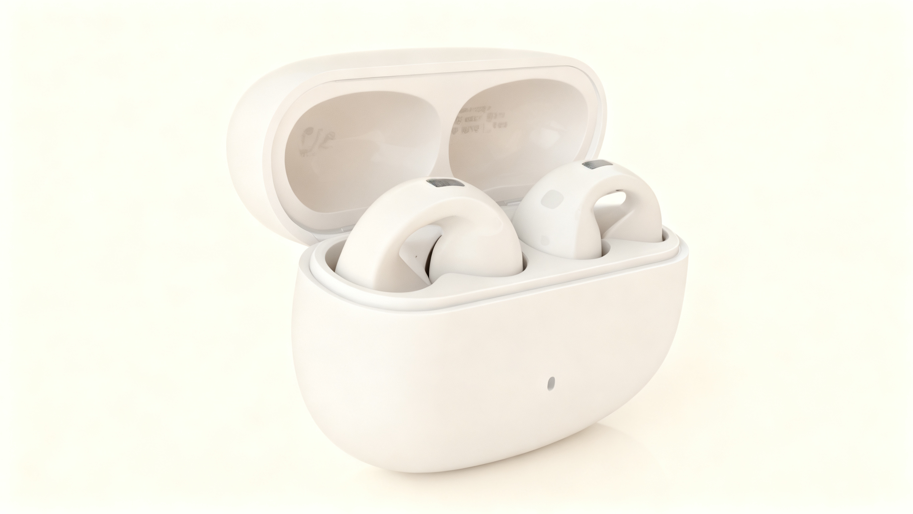
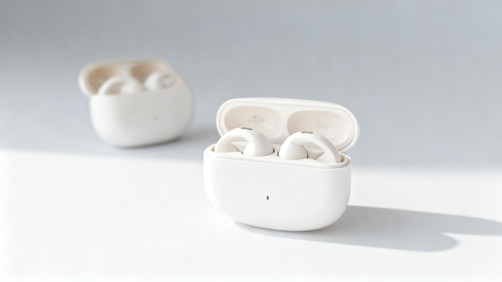
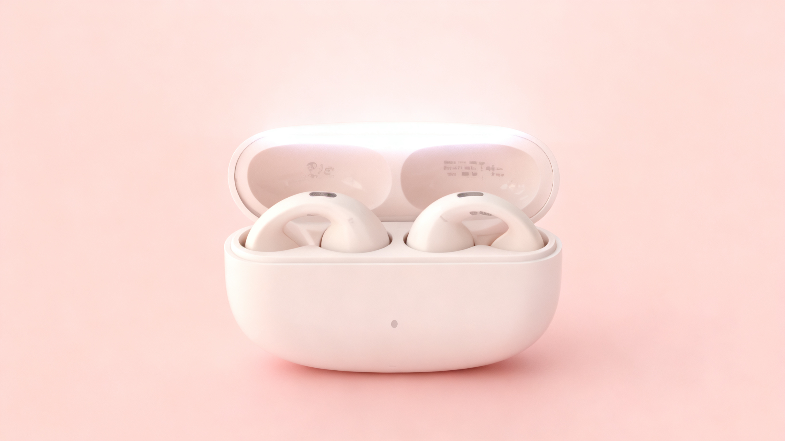
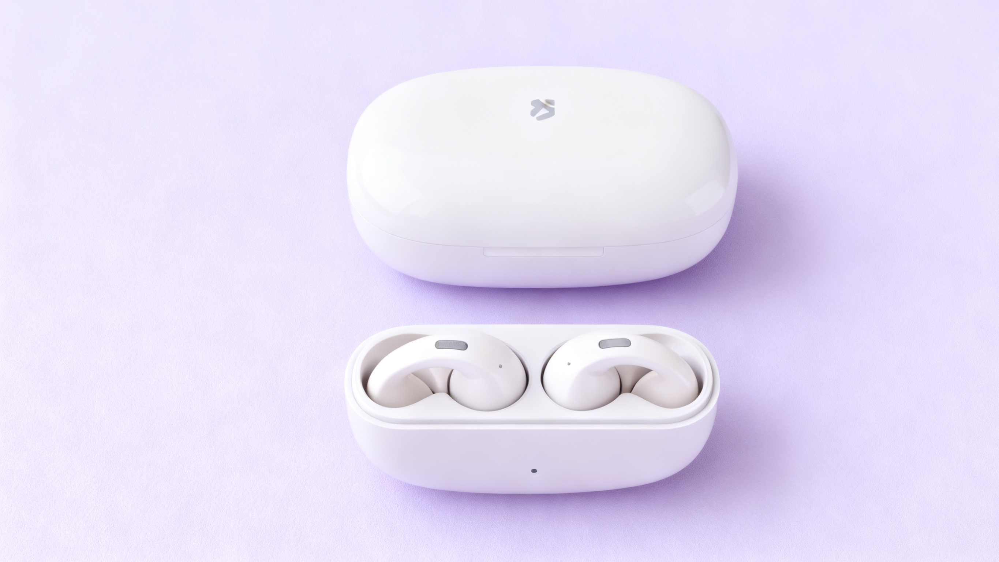
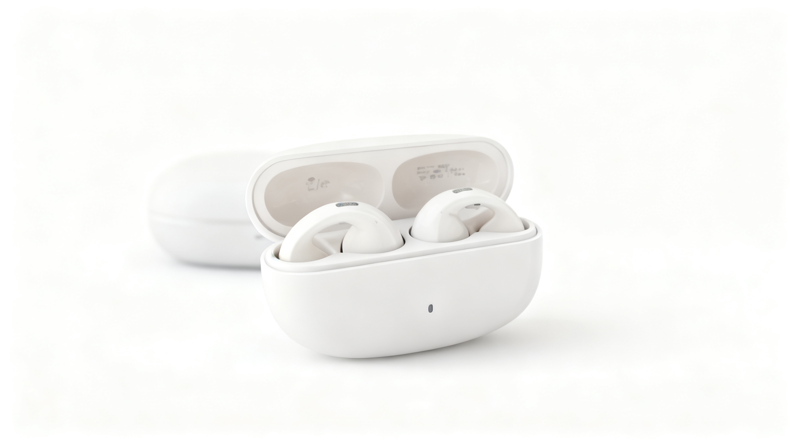

包装内容
- 耳机本体、充电仓、USB‑C 充电线
- 额外耳塞套（S/M/L）、说明书
- 贴心配件：收纳袋与理线扣

定位：日常通勤使用的降噪耳机。轻巧稳固，长久佩戴不压耳。


柄状造型，流线型过渡；亲肤涂层抗指纹；浅云白/雾光银配色。
仓体采用磨砂塑料与金属转轴，扣合紧致有吸力。

单耳约 4.6 g，轻巧不坠耳；表面细腻，开合阻尼顺滑，整体质感偏高级。

耳塞贴合耳道，长时间佩戴无明显胀痛；慢跑、地铁握扶手时不易脱落。
音质、降噪、通话、连接、操控，全面呈现。
10 mm 石墨烯动圈 + 生物振膜，瞬态优秀，失真低。
多麦克风阵列 + ENC/cVc 通话降噪，在嘈杂环境中仍能被清晰听见。

单击：播放/暂停；双击：切曲；长按：降噪/通透切换；滑动：音量调节。
自定义 EQ、耳机查找、固件升级、佩戴检测灵敏度、按键逻辑编辑。
模拟真实使用场景，点击、拖拽、滑动体验耳机的个性化调节。
拖动频段或选择预设，即刻查看 EQ 响应，并更换偏好声音风格。
当前模式：均衡，适合大多数通勤与流行音乐。
点击或滑动感受不同场景下的噪音压制程度，直观了解三种降噪策略。
强降噪模式下，地铁低频轰鸣显著削弱，保留地铁广播人声。
拖拽常用操作至左右耳区域，也可点击选择后再指派手势，快速完成上手设定。
点击曲目或分配“网络音乐播放”手势，连接在线音源感受操控体验。
长续航与快充，随时出发。
支持滑动与点击切换，悬停显示详情。
客观呈现优缺点，帮助快速决策。
通勤通学优先推荐；偏爱均衡耐听、追求稳健降噪与舒适佩戴的用户尤为适合。
若更偏极致解析或极限低延迟，可参考同价位主打的音乐或电竞向竞品；但综合体验与性价比，本款更均衡。
提交联系方式，我们将第一时间回复您。